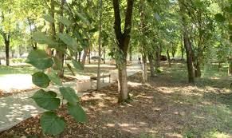

Atracții turistice în Călărași

Apasă pe imagine pentru a reveni la pagina principală.
Loc
Descriere
Parcul Central
Un loc frumos pentru plimbări și relaxare.
Muzeul local
Prezintă istoria și cultura zonei.
Podgoriile
Regiunea este cunoscută pentru producția de vin.